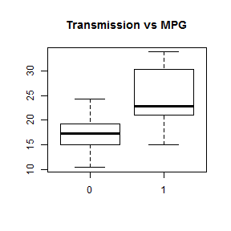

Is there any relation between MPG and the transmisson mode of the cars
1. Is there any relationship?
2. Is there any influence of number of cylinders?
HunBug
Coursera Student
1. Is there any relationship?
2. Is there any influence of number of cylinders?
In this example i will use the "MTCARS" dataset, it contains 32 observations:
head(mtcars)
## mpg cyl disp hp drat wt qsec vs am gear carb
## Mazda RX4 21.0 6 160 110 3.90 2.620 16.46 0 1 4 4
## Mazda RX4 Wag 21.0 6 160 110 3.90 2.875 17.02 0 1 4 4
## Datsun 710 22.8 4 108 93 3.85 2.320 18.61 1 1 4 1
## Hornet 4 Drive 21.4 6 258 110 3.08 3.215 19.44 1 0 3 1
## Hornet Sportabout 18.7 8 360 175 3.15 3.440 17.02 0 0 3 2
## Valiant 18.1 6 225 105 2.76 3.460 20.22 1 0 3 1
First of all i inspect the data with some plots

##
## Call:
## lm(formula = mtcars$mpg ~ mtcars$am + mtcars$cyl)
##
## Residuals:
## Min 1Q Median 3Q Max
## -5.686 -1.717 -0.266 1.884 6.814
##
## Coefficients:
## Estimate Std. Error t value Pr(>|t|)
## (Intercept) 34.522 2.603 13.26 7.7e-14 ***
## mtcars$am 2.567 1.291 1.99 0.056 .
## mtcars$cyl -2.501 0.361 -6.93 1.3e-07 ***
## ---
## Signif. codes: 0 '***' 0.001 '**' 0.01 '*' 0.05 '.' 0.1 ' ' 1
##
## Residual standard error: 3.06 on 29 degrees of freedom
## Multiple R-squared: 0.759, Adjusted R-squared: 0.742
## F-statistic: 45.7 on 2 and 29 DF, p-value: 1.09e-09